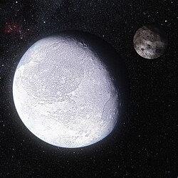

Eris and Dysnomia, imaged by the Hubble Space Telescope
Eris is the most massive dwarf planet and is slightly smaller than Pluto.
It is the largest object in the so-called "scattered disc".
It's discovery lead to the reclassification of Pluto as a dwarf planet.
It's proper name Eris comes from the Greek goddess of discord.
It resides in the scattered disc and was the farthest discovered Solar System object until the discovery of 2018 VG18.
Unlike other TNOs that appear reddish, Eris is mostly white.
One moon is known to orbit Eris - Dysnomia.
Eris was discovered by Mike Brown, Chad Trujillo, and David Rabinowitz in January 2005 at the Palomar observatory in California, from imgaes taken in October 2003.
At the time, this team was searching for large objects beyond the orbit of Neptune.
The reason for the search was due to the discovery of many new objects near Pluto's orbit, suggesting that there might be even more.
Those new objects were not considered planets, yet Pluto was, and if there were bodies similar in size to Pluto's, this could have opened the possibility of recognizing dozens of new planets.
They found partial success with the discovery of objects like Quaoaor, Sedna, and Orcus in 2002, 2003 and 2004 respectively.
During a period from December 2004 to March 2005, apart from Eris, the team discovered two other large objects - Haumea and Makemake.
These three were larger than any other object in this region except Pluto, though Eris was initially thought to be larger.
The three discoveries were announced on July 29 the same year (Haumea was also announced two days earlier by a different team).
With the three new discoveries, especially that of Eris, challenging the status of Pluto, a proposition to redefine what a planet is, and with it a new class of objects known as "dwarf planets", was submitted to the IAU.
The new definition would exclude Pluto and the three new objects from "planethood".
A resolution was passed in 2006, endorsing the new proposition.
The decision was controversial among the public due to people, which knew Pluto as a planet their whole life, perceived the change as a "demotion".
In October 2005, a moon around Eris was discovered - Dysnomia.
Eris is named after the Greek goddess of discord.
It was chosen, because the discovery of Eris led to a debate over the status of the ninth planet at the time - Pluto.
Before that, it was unoficially refered to as Xena, after the title character of the television series Xena: Warrior Princess.
The nickname was chosen for its initial letter "X", in reference to "planet X" - the ninth planet that is yet to be discovered.
Orbit and rotation
Eris takes 561 Earth years to complete one rotation around the Sun.
As a member of the scattered disc, it has a highly inclined orbit of 43.8° and an eccentricity of 0.44.
At the time of discovery, Eris was past its aphelion, and the object discovered at the greatest distance from the Sun, later beater by 2018 VG18 "Farout".
Eris completes one rotation every 25.9 hours, close to that of Earth's.
If Eris rotates in the same plane as Dysnomia's orbit, that would suggest an axial tilt of 78.3° to the Eridian orbit and 62.6° to the ecliptic.
Eris and Dysnomia are also mutually tidally locked, similarly to Pluto and Charon.
Eris was originally believed to be bigger than Pluto, with a diameter of ~2,400-2,600 km.
After a star occultation in 2010, however, the new diameter was 2326 km, slightly smaller than Pluto.

Artist's impression of what Eris and Dysnomia might look like. Eris has a nearly uniform bright and young surface, while Dysnomia is dark. Source
Eris has a density of 2.52 g/cm^3, higher than that of Pluto, and thus has a greater mass.
This suggests a greater silicate rock percentage.
It is possible for Eris to have a subsurface ocean in its inner mantle, mostly a result from radioactive decay and to a lesser extend tidal heating from Dysnomia.
The outermost layers are made of ice and rock.
Not much is known about the surface of Eris.
However, one notable thing about it is the unusually high albedo of 0.96.
It is most likely that the surface ices get replenished from Eris approaching and distancing away from the Sun.
Thus, no major tholin red spots are expected on the surface.
According to spectroscopic observations, the surface contains methane ice, similarly to Pluto and Triton.
It is also believed that the methane was produced under the surface, judging by the low amount of deuterium hydrogen.
The James Webb Space Telescope also discovered nitrogen ice.
So far, no ethane has been detected, further suggesting that the surface of Eris is young and similar to Pluto's Sputnik Planitia.
Main article: Dysnomia
Eris has a small moon called Dysnomia.
The moon is named after Eris's daughter, the goddess of lawlessness.
It is the second largest known satellite of a dwarf planet and is possibly round, though it has a very low density.
Eris and Dysnomia are mutually tidally locked, just like Pluto and Charon.
It has a nearly circular prograde orbit and a contrastingly low albedo.
Eris has not been visited by a spacecraft.
It is estimated that it would take 24.7 years to reach Eris with a Jupiter gravity assist, current technology, and a launch date of April 3, 2032.
External links
{% include catplanets.html %}
.jpg){kind=link}